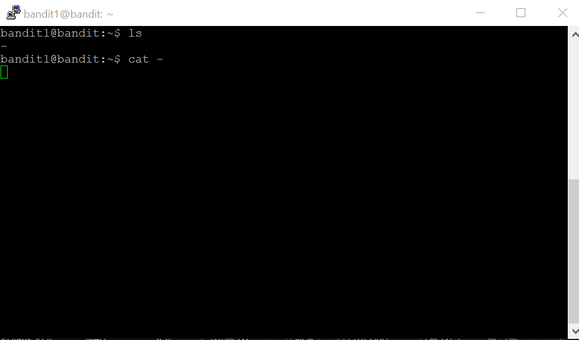

문제를 해석해 보니 다음 단계를 위한 패스워드가 -라는 이름의 파일에 있다고 합니다. 이것 또한 파일이니까 그냥 cat 명령어를 쓰면 되지 않을까요?
먼저 ls 명령어를 이용해서 존재하는 파일들을 확인해 보니

여기에 -라는 이름의 파일이 있군요.
이 파일을 cat 해보면

짜잔~~~
아무것도 나오지 않습니다.(?)
뭐가 문제인걸까요? 아래에 Helpful Reading Material이라는게 있는데요.
이름처럼 도움이 되느깐 저기에 놨겠죠? 한 번 들어가 봅시다.